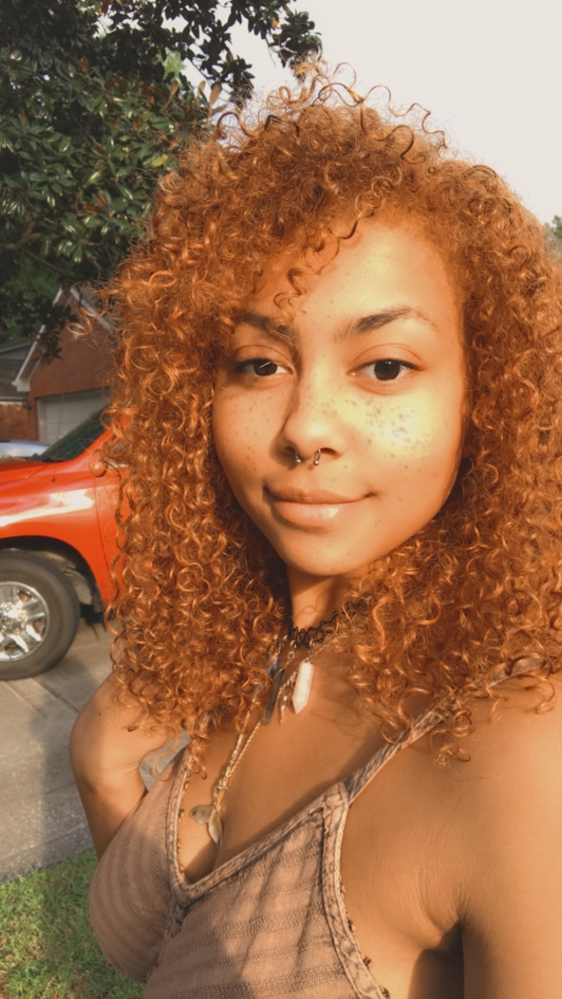

Hi! I'm Nikki Dibartolomeo
-
I'm A Thinkful Student living in Houston, Tx.
-
I'm new to software developing but I look forward to working with others to further develop my knowledge of computer programming.
About Nikki
-
I'm originally from a ranch community in California, and acquired a passion for Computer programming after taking a C++ course in High School. Being so closely itegrated with animals and outdoor activities raised my awareness for the environment and the creatures on it. By learning to be a Software Developer, I hope to participate in projects that help raise the awareness of others.
-
After graduating High School, I dedicated a lot of my time towards working with and reahbilitating animals to loving homes. I re-examined my lifetyle and behaviors and work hard eveyday to be consious of the footprint I leave behind.